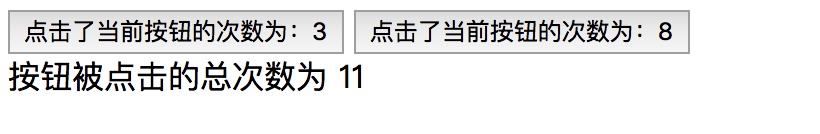
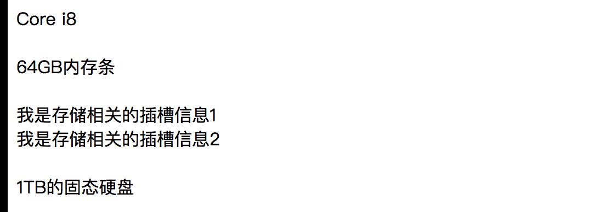

本文是早期学习Vue整理的一些阶段性总结，内容主要关于Vue框架中组件的事件传递和插槽。
组件通信（自定义事件）
组件间通信主要涉及到两方面的内容，即父组件（父级标签）向子组件传递数据以及子组件通过自定义事件的方式来反馈给父组件。
数据的传递我们只需要在组件中使用props属性来记录和接收需要的内容即可，这里简单通过代码示例的方式说明下自定义事件。
1
2
3
4
5
6
7
8
9
10
11
12
13
14
15
16
17
18
19
20
21
22
23
24
25
26
27
28
29
30
31
32
33
34
35
36
37
38
39
40
41
42
43
44
45
46
47
48
49
50
51
52
53
54
55
| <!DOCTYPE html>
<html lang="en">
<head>
<meta charset="UTF-8">
<title>Title</title>
<script src="../../Vue/vue.min.js"></script>
</head>
<body>
<div id="demoID">
<button-custom @countereventfunction="totalEventFunction()"></button-custom>
<button-custom @countereventfunction="totalEventFunction()"></button-custom>
<div>按钮被点击的总次数为 {{total}}</div>
</div>
<template id="button_custom">
<button @click="countereventfunction">点击了当前按钮的次数为：{{counter}}</button>
</template>
<script>
Vue.component("button-custom",{
template:"#button_custom",
data:function () {
return {
counter:0
}
},
methods:{
countereventfunction:function () {
this.counter += 1;
this.$emit("countereventfunction");
}
}
});
new Vue({
el: "#demoID",
data: {
total: 0
},
methods: {
totalEventFunction: function () {
console.log("___");
this.total += 1;
}
}
});
</script>
</body>
</html>
|
上面的代码中我们在组件中编写了一个按钮标签，该标签在点击的时候能够更新按钮的内容 counter计数器加1、另外我们还有一个标签用来统计页面中所有按钮被点击的次数，这就要求每次组件中标签的点击事件被触发的时候父级标签应该收到通知，我们通过this.$emit方法来实现。
代码的执行结果为:

注意：在使用v-on标签或者是其语法糖@的时候，函数的名称不支持驼峰标识命名的方式。
插槽（内容分发）
插槽的简单说明：Vue 实现了一套内容分发的 API，这套 API 基于当前的 Web Components 规范草案，将 元素作为承载分发内容的出口。
插槽分成两种，有名称的插槽和没有名称的插槽,因此也称为具名插槽和匿名插槽。
插槽的使用切入点是什么？
我们注册好组件之后，在使用组件的时候使用的自定义标签对，在这个标签对中可以有内容。
如果在定义组件的时候，我们在组件中预留了元素，那么页面在渲染的时候会使用自定义标签中的内容来替换组件中的slot元素。
下面给出匿名插槽和具名插槽使用的代码示例：
匿名插槽示例
1
2
3
4
5
6
7
8
9
10
11
12
13
14
15
16
17
18
19
20
21
22
23
24
25
26
27
28
29
| <div id="demoID">
<my-slot>
<p>我是插槽的内容 p标签</p>
<div>我是插槽的内容 div标签</div>
<input type="date">
</my-slot>
<hr>
<my-slot></my-slot>
</div>
<template id="my_slot">
<div>
<h1>示例代码的头部标题</h1>
<slot>预留的插槽出口</slot>
<footer>示例代码的底部标签</footer>
</div>
</template>
<script>
Vue.component("my-slot",{
template:"#my_slot"
})
new Vue({
el:"#demoID"
})
</script>
|
代码在运行的时候，组件中预留的slot标签会被自定义标签my-slot（组件）内部的标签完成替换。
具名插槽代码示例
1
2
3
4
5
6
7
8
9
10
11
12
13
14
15
16
17
18
19
20
21
22
23
24
25
26
27
28
| v id="demoID">
<my-slot>
<div slot="cpu">Core i8 </div>
<div slot="memory">64GB内存条</div>
<div slot="store">我是存储相关的插槽信息1</div>
<div slot="store">我是存储相关的插槽信息2</div>
<div slot="hard-drive">1TB的固态硬盘</div>
</my-slot>
</div>
<template id="my_slot">
<div class="main">
<slot name="cpu">我是cpu插槽</slot><br>
<slot name="memory">我是memory插槽</slot><br>
<slot name="store">我是存储插槽</slot><br>
<slot name="hard-drive">我是硬盘插槽</slot><br>
</div>
</template>
<script>
Vue.component("my-slot",{
template:"#my_slot"
});
new Vue({
el:"#demoID"
})
</script>
|
代码的执行结果为：
